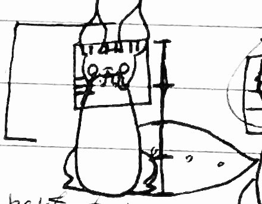
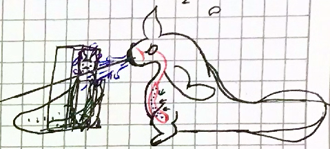

Scugs
Perhaps the most popular creature of the rainworld, these critters are very intellegent and tend to gather in colonies.
Scugpollos

Small egg-laying social critters which thrive in colonies and are rarely observed waddling in solitude
Waterjet scugs
Water dwelling critters, these large but quick slugcats hunt lizards for food.